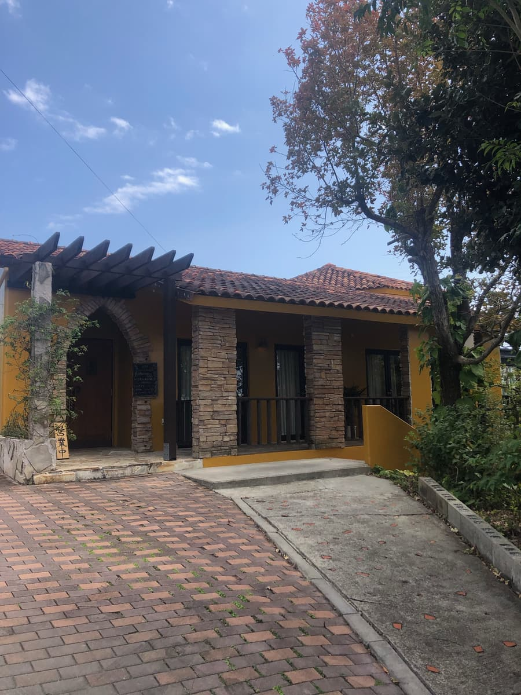
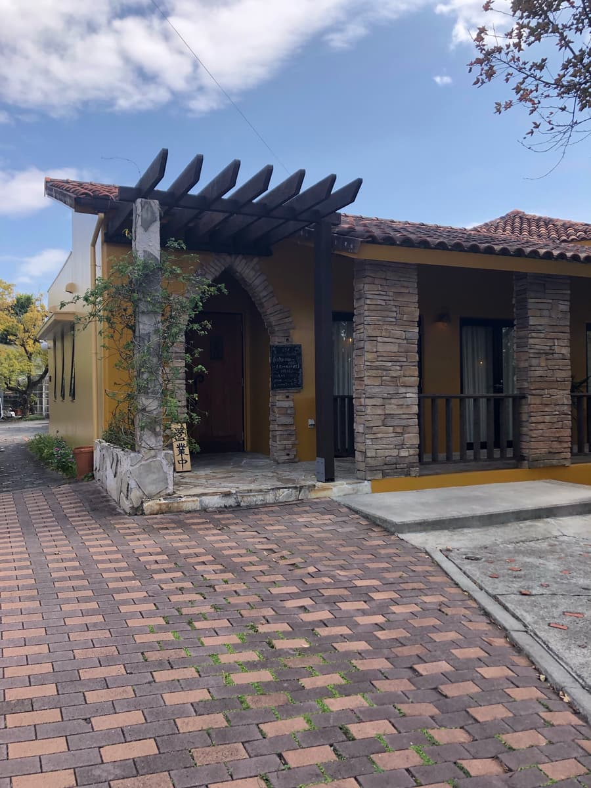
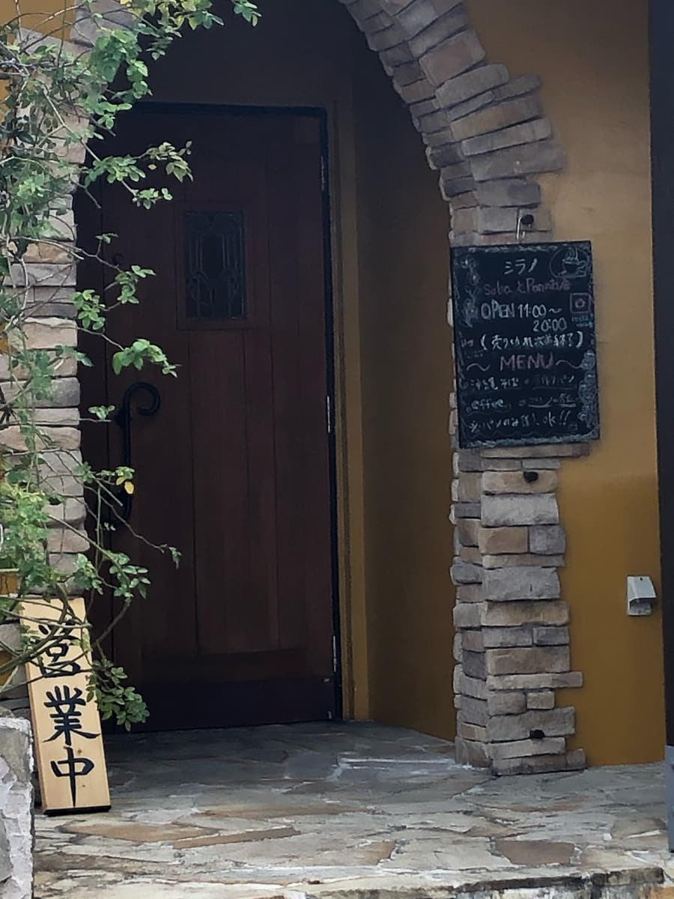
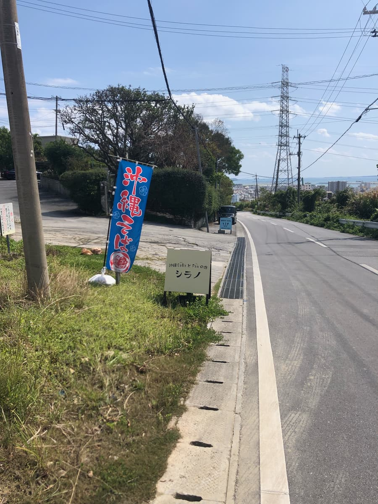
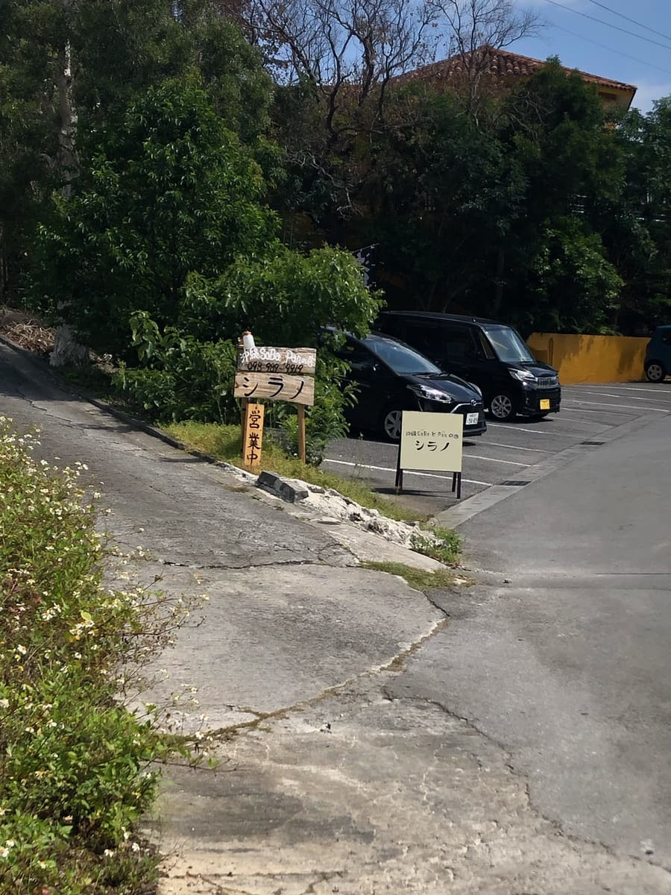
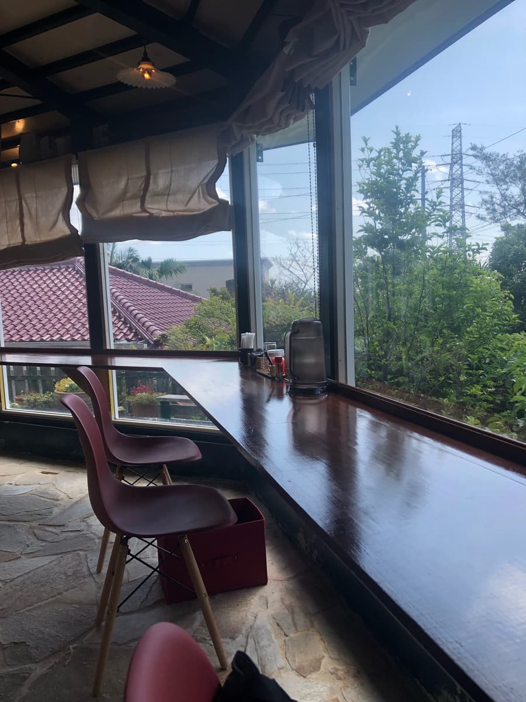
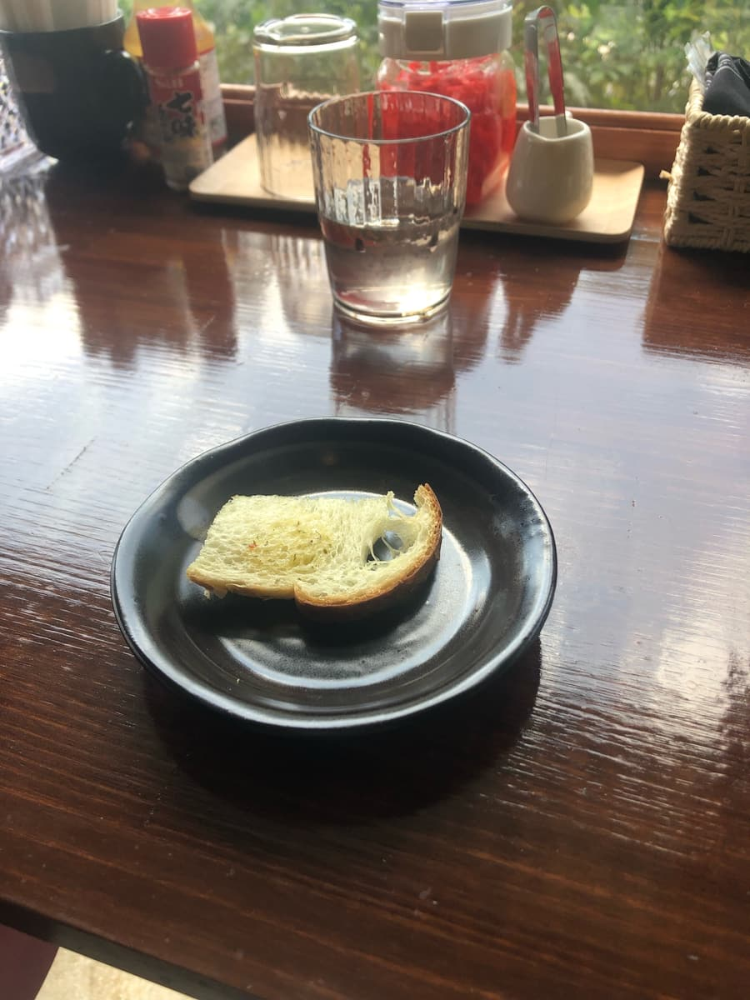
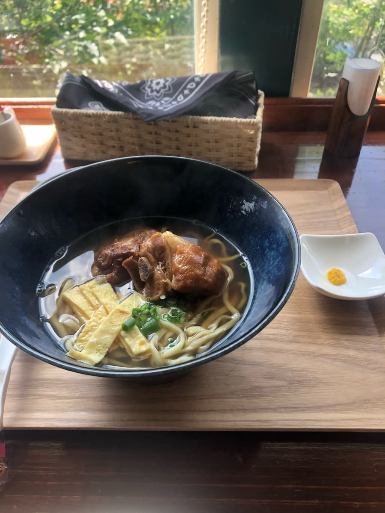
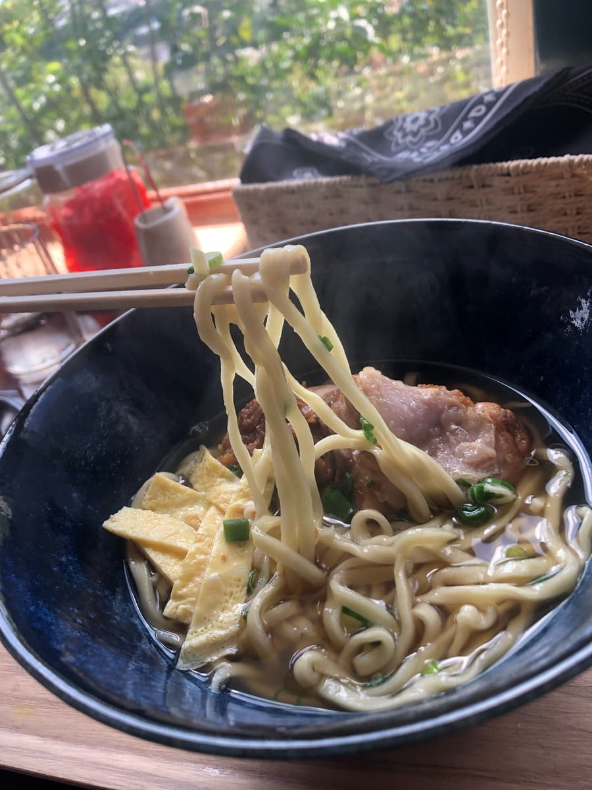

2024.3に食べました😄 こちらのお店は新聞で知りましたｗｗ



どこの国の建物な感じでしょうか？洋風ですね😄 普段行くような沖縄そば屋とは違います😄


新聞記事に寄れば、2023.11にオープンしたばかりとのこと。お店のオーナーはフレンチ出身の料理人のようです。フレンチ出身だからこのような洋風な建物なんですね😁
店内に入ると、お昼時もあって、結構お客さん多めな感じでした。洋風な店内ですが、入った途端に鰹出汁の良い匂い🤤
鰹と豚骨の出汁ベースの様ですが、店内に漂う匂いの感じからだと鰹が効いていると思いましたｗｗ

メニュー表の写真撮るのを忘れてしまいましたが、「ソーキそば」を注文。その他のメニューに「あさりだし沖縄そば」もあり美味しそうだなと思いましたが、「売り切れ」と言われてしまいました(^0^;) また「スパイスカレーそば」というメニューもあり、こちらも美味しそうで迷いましたが、やはりここは王道を注文すべきと思い、「ソーキそば」にしました😁

沖縄そばの前に「前菜です」とガーリックトーストが。このスタイルは他店には無いですね、さすが看板のとおり「沖縄Sobaとpanの店」です😁
カリッカリにトーストされたパンはガーリックも効いていて普通に美味しいです。

まずはスープを味わいます。鰹をメインに豚骨出汁も合わせていてフレンチの手法を参考にしたスープのようです。店内に良い匂いが広がるスープなので期待しながら一飲み。
やはり鰹が効いていて、普通に美味しい感じのスープですね。

次に麺をいただきます。自家製麺の熟成麺で、製麺後5日間寝かせて完成させるとのこと。細麺でこちらも普通な感じだなと思いました。
スープ、麺、ソーキと味わいながら後半に他店には無い、シークヮーサー、タンカン（沖縄みかん）を使った薬味で味変。
鰹出汁のスープに柑橘系の爽やかさが追加され、新しい味と思いましが、合いますね、美味しいです。
評価（9点/15点）：外観、店内は洋風でおしゃれな感じのお店です。フレンチ出身のオーナーが作る沖縄そば、一度は如何でしょうか😁 柑橘系の薬味は鰹が効いたスープに合いますので味わっては如何でしょうか？ 場所ものどかで静かでゆったりと頂けます。
麺 ：★★★☆☆（3）
スープ：★★★☆☆（3）
具 ：★★★☆☆（3）